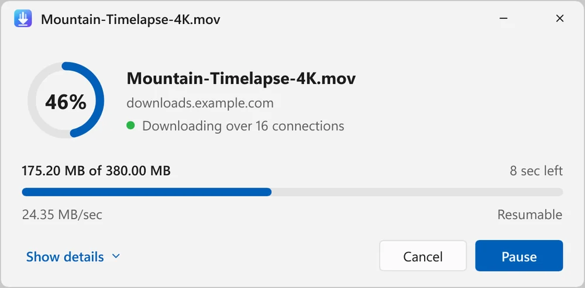
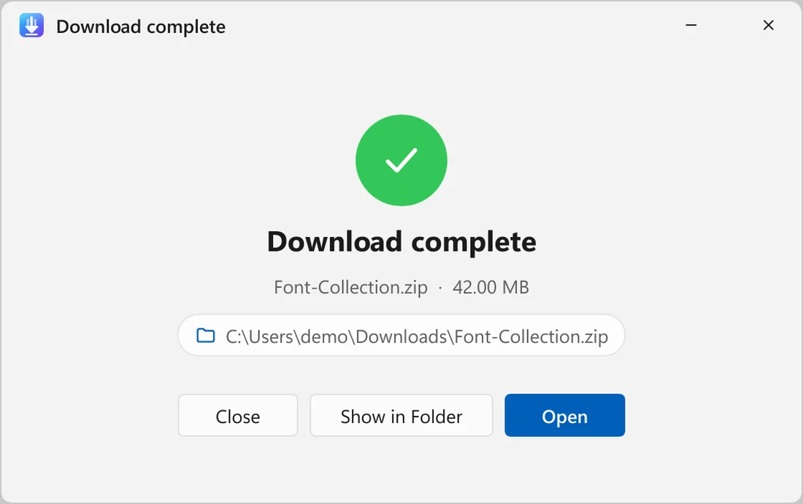
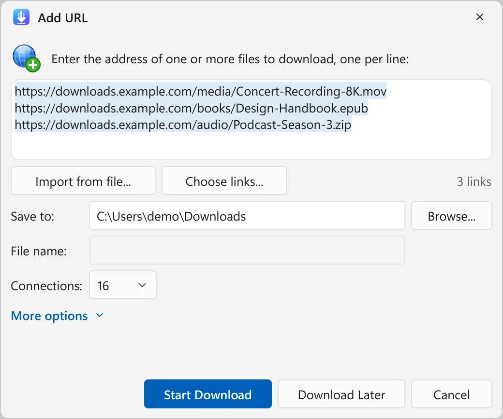
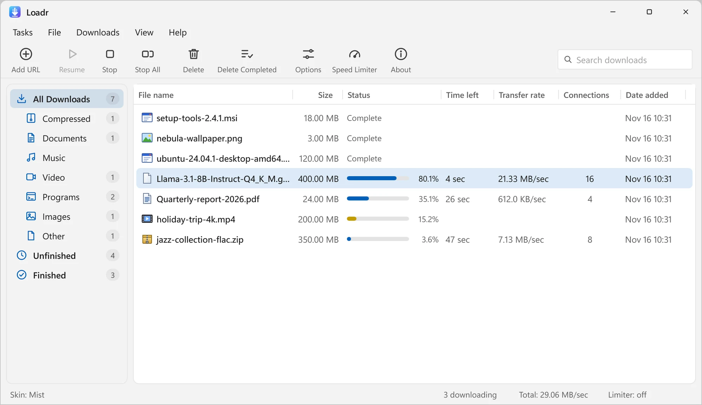
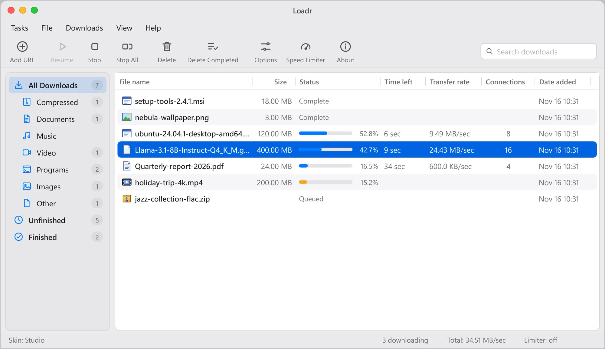
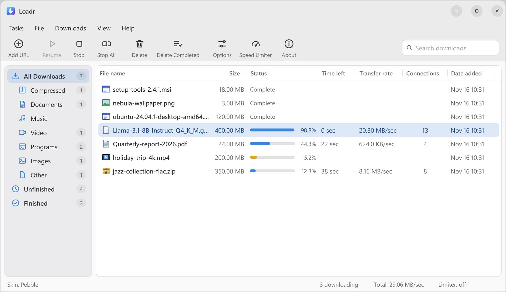

Fast
- Up to 32 connections per file, 16 by default.
- Connections that finish early take over the biggest piece left, so the last few percent don't crawl.
- Change the number of connections while a file downloads.
Download manager for Windows, macOS and Linux
Loadr splits every file into pieces, fetches them over many connections at once and puts them back together byte for byte. Close the app, lose your Wi-Fi, restart: it picks up exactly where it stopped.


Speed
A live speed graph, a bar for every connection, and a speed limit you can set in the middle of a download. Connections that finish early take over the biggest piece left, so the last few percent don't crawl.

Reliability
Progress only counts bytes that are really on disk, saved every second. Quit, sleep, lose the connection or crash: Loadr resumes, and checks the file on the server hasn't changed first.

Convenience
Paste a list, import a text file, or let the browser extension hand downloads over with their cookies. Add mirrors, a checksum or a sign-in when a download needs them.

Native everywhere
Each system gets its own hand-made looks, light and dark. Switch in one click.



No account, no ads, no analytics. Loadr collects no data at all, and neither does this website: no cookies, no scripts, no third-party requests.
Read the privacy policy →Windows 10 and 11, macOS 11 or later (Apple silicon and Intel) and Linux. It is a native app on each, with looks made for that system.
Loadr will be a paid app, bought once in the Microsoft Store and the Mac App Store. No subscription, no account.
Direct links to files over HTTP and HTTPS. It does not download from video streaming sites, torrents or FTP.
Yes: a small extension for Chrome, Edge, Brave, Vivaldi and Firefox hands downloads to Loadr with their cookies, so downloads that need you to be signed in work too.
Nothing. Loadr has no analytics, no crash reporting service and no account. The only traffic is the downloads you start. Read the privacy policy.
Loadr is on its way to the Microsoft Store and the Mac App Store, with a Linux edition to follow.
Questions in the meantime? Contact support.